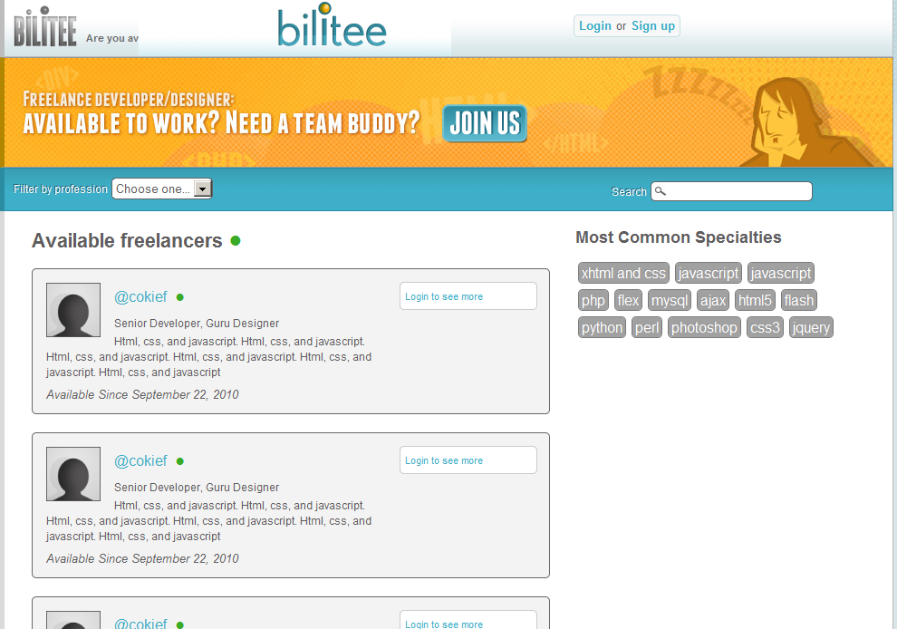
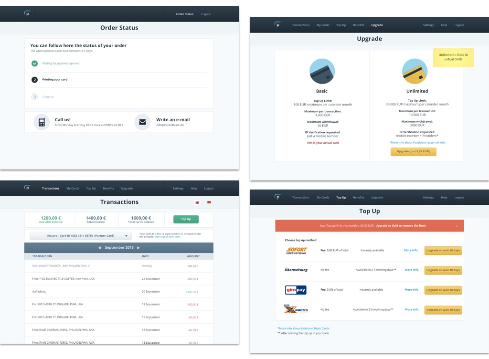
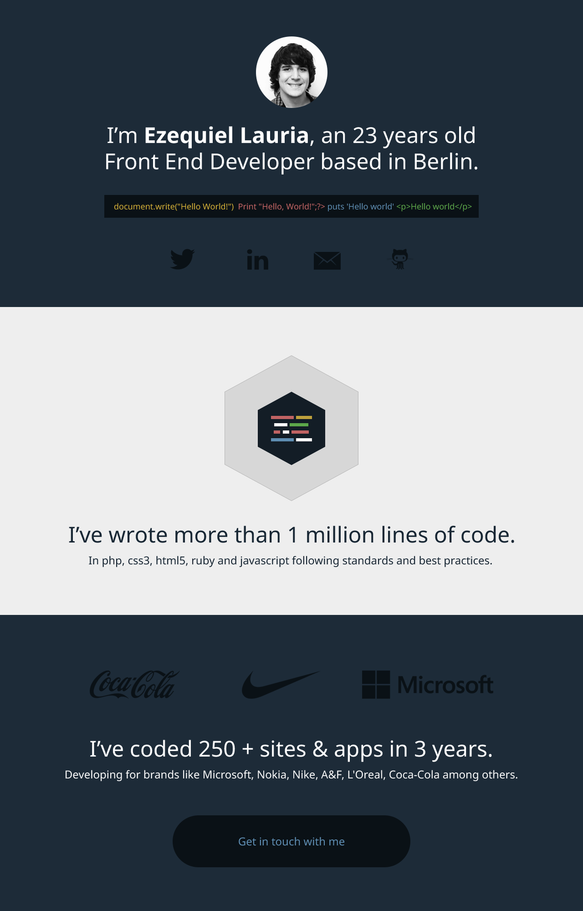
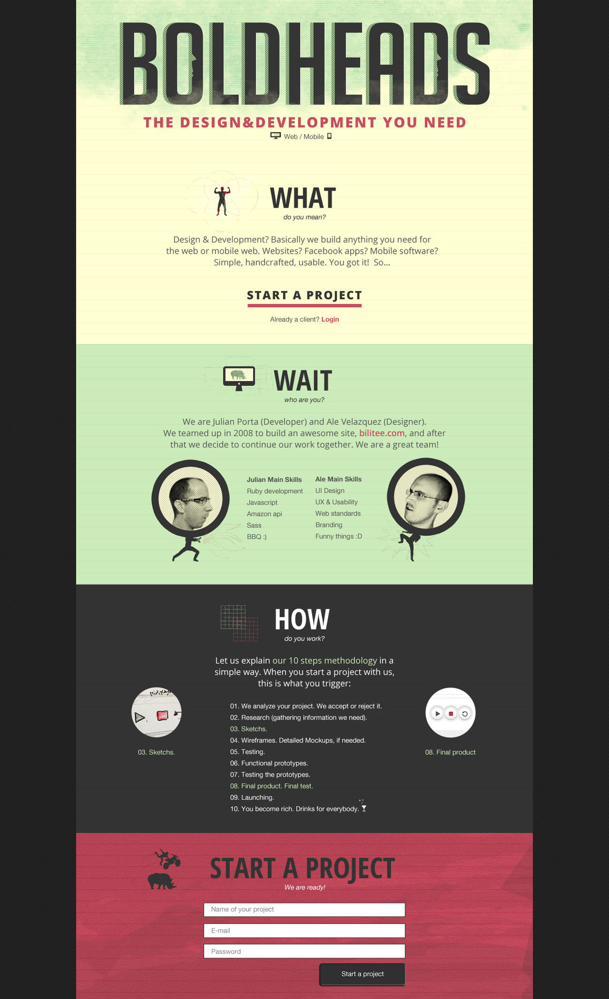

UI work, early days
Disclaimer: During my career, I designed for multiple companies using diverse platforms, technologies, worked with different types of teams in a different type of roles. Some of my work could look a bit dated or maybe it does not exist anymore, that's due to the fast pace of technology. It was a long journey and I learned a lot in every step.
2008-2012
Historic context: Obama was winning his election and I was...coding and designing websites, landing pages and apps for Globant. Facebook was still not very popular worldwide and practically non-existent in America. The Iphone was just launched a year ago and we had only two devices to share in a company of 1000+ employees. UX was not a thing, flat design was not a thing, designers working in software development were mere decorators. Skeuomorphism was the trend and we were (wrongly) using the only tools available like Tortoise git, Photoshop and html+css+js to collaborate between designers and developers.
It's hard to rescue something decent from ten years ago, I have loads of lost work protected by NDAs or simply just lost in time. Here you can find some examples like internal tools for Globant, contract work for Travelocity or CDR and a social network I designed an coded for Telefonica. Also some personal projects.


Bilitee
Bilitee was a social network to connect and encourage new collaborations between designers and developers.
Payango
Payango was a prepaid card company. Admin and user dashboard.
Landing pages
For a colleague and a personal project.
 